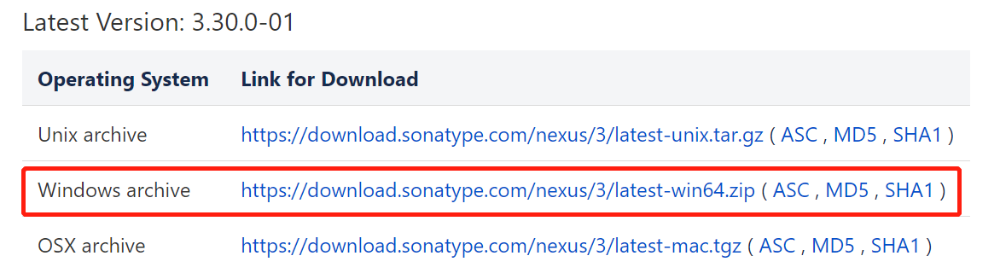
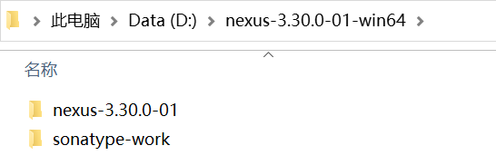
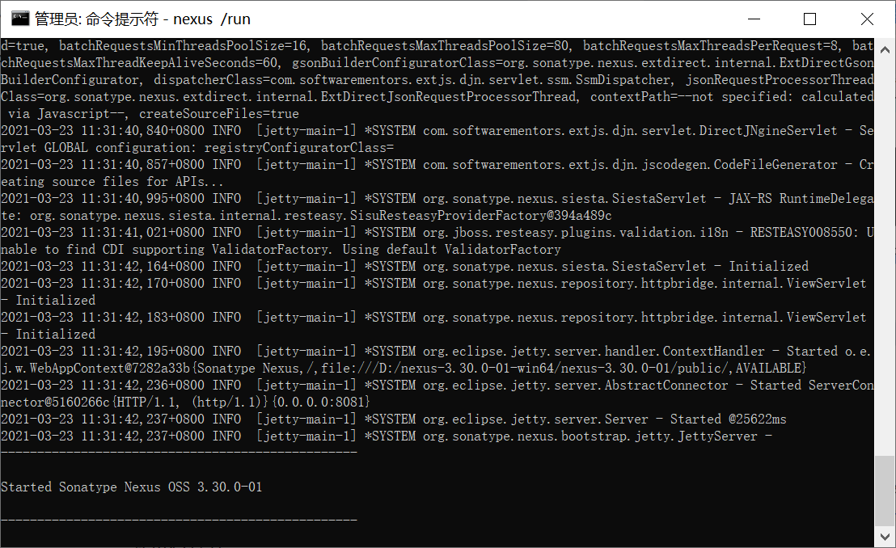
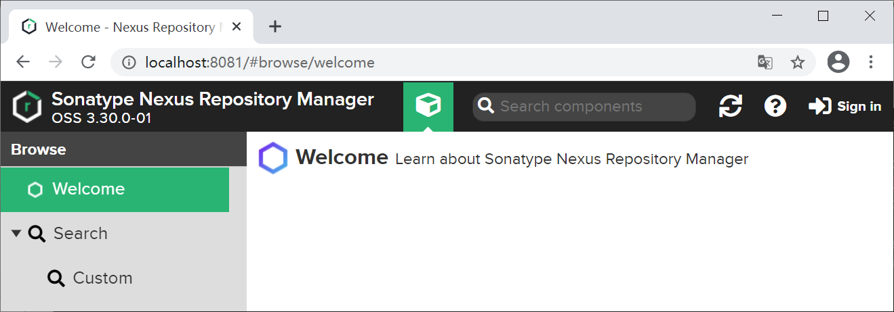
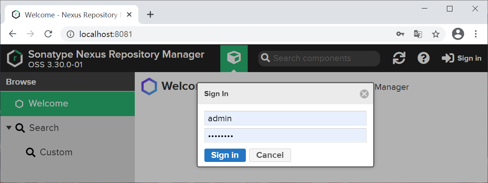
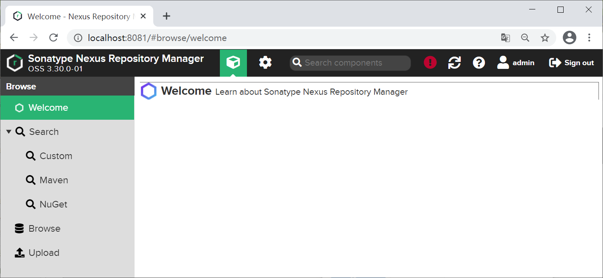

Nexus3使用教程
目前 Nexus 分为 Nexus 2 和 Nexus 3 两个大版本，它们是并行的关系。与 Nexus 2 相比，Nexus 3 具有很多优势，例如支持更多的仓库格式、优化了用户的使用界面以及更加强大的搜索功能等等。
目前使用最多的，运行最稳定是 Nexus 2，但随着 Nexus 3 对 Maven 的支持越来越稳定，很多公司和组织都陆续开始使用 Nexus 3。
本节我们将介绍 Nexus 3 的安装和访问过程。
2. 将下载的安装包解压到本地，可获得 nexus-3.30.0-01 和 sonatype-work 两个目录，如图 2。
打开命令行窗口，跳转到 nexus-3.30.0-01\bin 目录下，执行以下命令，启动 Nexus 服务。
执行结果结果如图 3 所示，则表示 Nexus 启动完成。
点击 Nexus 3.x 首页右上角的“Sign in”按钮，在登录页面输入用户名和 密码（默认用户名为 admin，默认密码则保存在 /sonatype-work/nexus3 目录下的 admin.password 文件中)，点击“Sign in”按钮登录，如图 5 所示。
登录成功后，结果如图 6 所示。
目前使用最多的，运行最稳定是 Nexus 2，但随着 Nexus 3 对 Maven 的支持越来越稳定，很多公司和组织都陆续开始使用 Nexus 3。
本节我们将介绍 Nexus 3 的安装和访问过程。
下载 Nexus 3
1. 进入 Nexus 3.x 下载页面（目前最新版是 3.30.0-01），根据操作选择相应的版本进行下载。

图1：Nexus 下载页面
2. 将下载的安装包解压到本地，可获得 nexus-3.30.0-01 和 sonatype-work 两个目录，如图 2。

图2：Nexus 解压
其中：
- nexus-3.30.0-01：此目录包含 Nexus 运行所需要的文件以及所有必需的其他组件，如启动脚本、依赖 jar 包等。
- sonatype-work：该目录包含所有由 Nexus 存储和管理的仓库，组件和其他数据。
启动 nexus 服务
我们可以在 nexus-3.30.0-01\bin 目录下发现一个名称位 nexus.exe 的可执行文件，它是在 Windows 平台上运行 Nexus 的启动脚本，该脚本包含了启动服务、停止服务、创建服务和删除服务等命令。打开命令行窗口，跳转到 nexus-3.30.0-01\bin 目录下，执行以下命令，启动 Nexus 服务。
nexus /run
执行结果结果如图 3 所示，则表示 Nexus 启动完成。

图3：Nexus 3 启动完成
访问 nexus 3.x
启动完成后，在浏览器地址栏输入 http://localhost:8081/，访问 Nexus 界面，如图 4 所示。

图4：Nexus 3 用户界面
点击 Nexus 3.x 首页右上角的“Sign in”按钮，在登录页面输入用户名和 密码（默认用户名为 admin，默认密码则保存在 /sonatype-work/nexus3 目录下的 admin.password 文件中)，点击“Sign in”按钮登录，如图 5 所示。

图5：Nexus 3 登录界面
登录成功后，结果如图 6 所示。

图6：Nexus 3 登录成功
关注公众号「站长严长生」，在手机上阅读所有教程，随时随地都能学习。内含一款搜索神器，免费下载全网书籍和视频。

微信扫码关注公众号